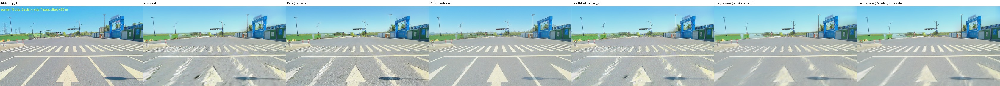
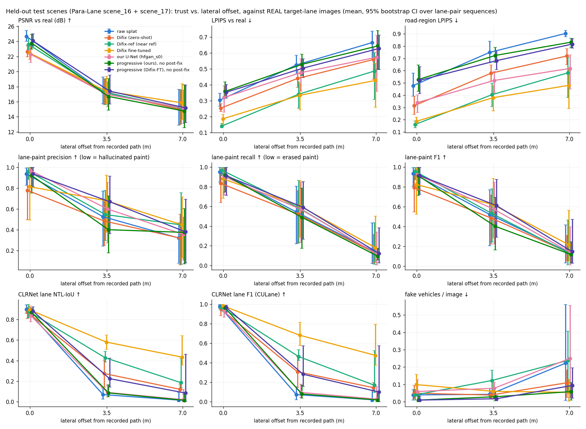
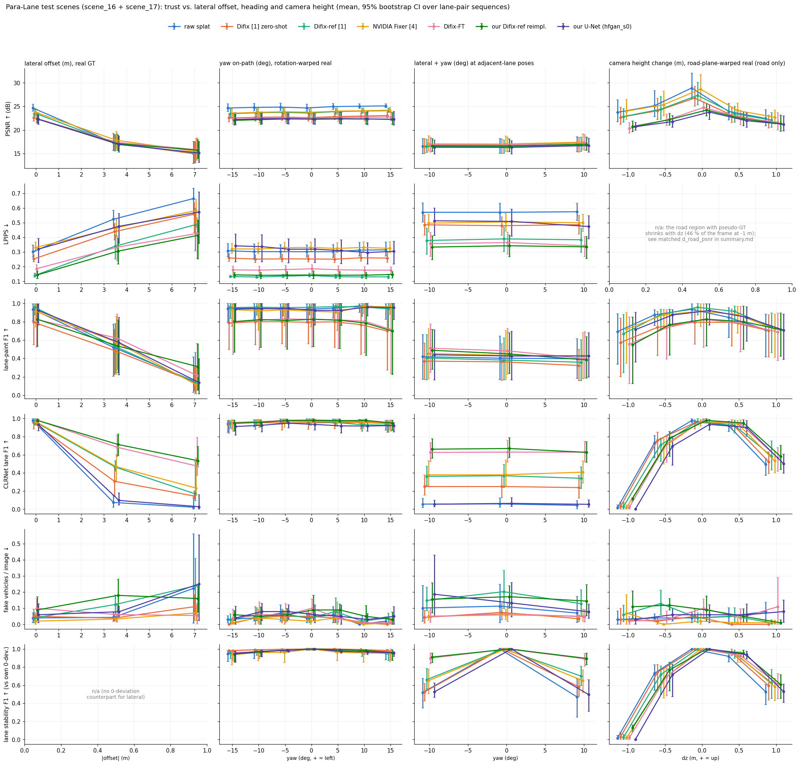
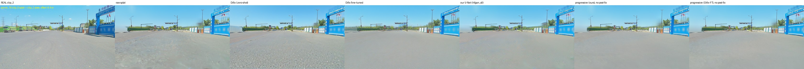
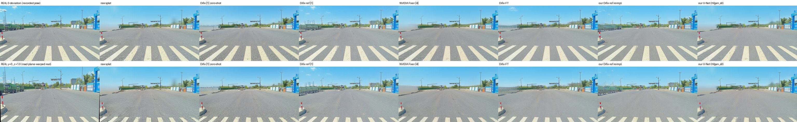
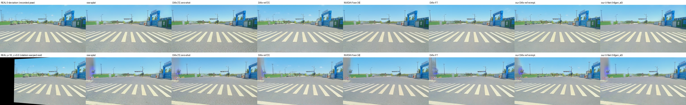
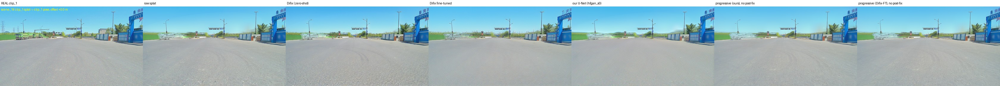

- Driving stacks are tested in simulators rebuilt from real drives. When the simulated car leaves the recorded path, the rendered camera images degrade.
- Generative "fixers" (e.g., NVIDIA's Difix3D+) make those images look better, but better-looking is not the same as correct: they can invent lane lines and cars.
- Using real multi-lane recordings, we measure how quickly trust decays as the camera moves sideways or changes height, and which fixers help or hallucinate. We reimplement Difix3D+ ourselves and train a small fixer from scratch.
Problem and motivation
A Gaussian splat reconstructed from one drive is accurate along the path the car recorded, but the recording camera never saw most of the scene from anywhere else. A driving policy tested in the simulator will deviate from the log (a lane change, a swerve), and a different vehicle may carry its camera higher (a truck) or lower. If the rendered images are wrong there, the simulator's verdict on the driving stack is wrong too.
Recent work repairs these renders with diffusion-based fixers. Most papers judge them with perceptual image scores, which reward realistic-looking images. We ask whether they make the simulator more trustworthy: do lane detectors and car detectors see the same things they would in reality?
What makes this measurable: the Para-Lane dataset scans the same roads in three parallel lanes (about 3.3 m and 6.3 m apart), so we have real photos at off-path viewpoints to compare against.
Approach
- Rebuild real drives as 3D Gaussian splats (Para-Lane, plus EUVS, MV2 and HUGSIM's nuScenes scenes) and render them from new camera positions: sideways, turned, higher or lower.
- Make training pairs: render one lane's scene from the neighbouring lane's camera positions and pair each render with that lane's real photo.
- Fixers compared: NVIDIA's released Difix and Fixer; our own reimplementation of Difix3D+'s training; a small U-Net trained from scratch; Difix3D+'s progressive update (fixed images fed back into the 3D scene); FaithFusion's confidence weighting; and a purely geometric road-surface prior.
- Measure trust vs. deviation: image quality against the real photos, hallucination (invented or erased lane paint, fake cars), agreement of a lane detector (CLRNet) and a car detector (YOLO), and a closed-loop driving policy in the HUGSIM simulator.
Pilot results (Sep 28, 2026)
These come from a working prototype built before the proposal deadline; the full study follows the timetable in the proposal.

| Finding | Evidence |
|---|---|
| Trust collapses quickly off the path | Lane-detector agreement 0.98 on-path → 0.07 at ~3 m → 0.02 at ~6 m (raw splat) |
| Off-the-shelf fixers look better but aren't more faithful | Released Difix improves perceptual scores; lane-paint accuracy stays at the raw level |
| Fixers trained on our driving pairs are most faithful, but invent cars | Our Difix reimplementation: lane agreement 0.59 at ~3 m, but 0.18 fake vehicles per image vs. 0.04 raw |
| Refining the 3D scene itself can work, but depends on the scene | Progressive update: lane F1 0.18 → 0.91 on one test scene, small gain on the other |
| Geometry helps without hallucinating | Road-surface prior: lane agreement 0.18 → 0.41 at ~3 m, no generative model involved |
| Trained fixers don't transfer to other cities | On EUVS (MARS, US), fixers trained on Para-Lane are no better, or worse, than the raw render |
Other deviation axes





Videos
Side-by-side clips across datasets and deviation types. More scenarios are being added.
Status and deliverables
| Milestone | Date | Status |
|---|---|---|
| Proposal | Sep 29 | Final (PDF) |
| Mid-term report | Oct 29 | Planned |
| Presentation | Dec 1–10 | Planned |
| Final webpage and code | Dec 10 | This page; code released at the end |
Limitations so far
The main results come from one city, one camera rig and daytime conditions, with two held-out test scenes; fixers trained there do not transfer to other datasets. Night, rain, dense traffic, side cameras and moving objects seen from new viewpoints are not yet covered. The hallucination metrics are proxies (lane paint and vehicles).
Main papers and data
- Difix3D+: Improving 3D reconstructions with single-step diffusion models, CVPR 2025 — arXiv
- FaithFusion: harmonizing reconstruction and generation via pixel-wise information gain, CVPR 2026 — arXiv
- HUGSIM: a real-time, photo-realistic and closed-loop simulator for autonomous driving, TPAMI 2026 — arXiv
- NVIDIA Fixer — GitHub; ReconDreamer (NTA/NTL-IoU metrics) — arXiv; PRG-Fusion — arXiv
- Para-Lane — arXiv; EUVS — arXiv; MV2 — arXiv
Images and videos on this page are derived from Para-Lane (CC BY-NC 4.0), nuScenes via HUGSIM, EUVS/MARS and MV2, shown for non-commercial academic purposes. No datasets or model weights are distributed here.